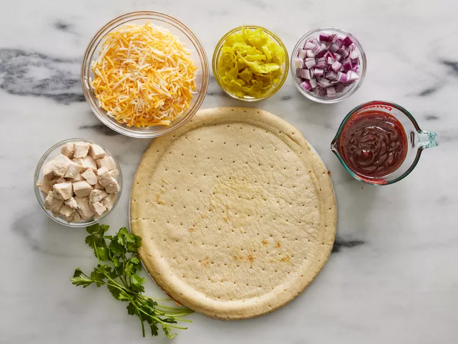

This BBQ chicken pizza has spicy barbecue sauce, diced chicken, peppers, onion, and cilantro, all covered with cheese and baked to bubbly goodness! This is similar to a recipe I had at a popular pizza place in California.
Original recipe (1x) yields 8 servings
Gather all ingredients. Preheat the oven to 350 degrees F (175 degrees C).
Place pizza crust on a baking sheet. Spread barbeque sauce on crust.
Top with chicken, pepperoncini peppers, onion, and cilantro.
Cover with Colby-Jack cheese.
Bake in the preheated oven until cheese is melted and bubbly, about 15 minutes.
| Servings Per Recipe: 8 | ||
|---|---|---|
| Calories: 385 | ||
| Nutrient | Amount | % Daily Value * |
| Total Fat | 16g | 21% |
| Saturated Fat | 9g | 46% |
| Cholesterol | 58mg | 19% |
| Sodium | 1666mg | 72% |
| Total Carbohydrate | 38g | 14% |
| Dietary Fiber | 2g | 6% |
| Total Sugars | 9g | — ** |
| Protein | 23g | 45% |
| Vitamin C | 3mg | 3% |
| Calcium | 24mg | 2% |
| Iron | 1mg | 4% |
| Potassium | 94mg | 2% |
|
* Percent Daily Values are based on a 2000 calorie
diet. ** Daily Value not established for Total Sugars |
||